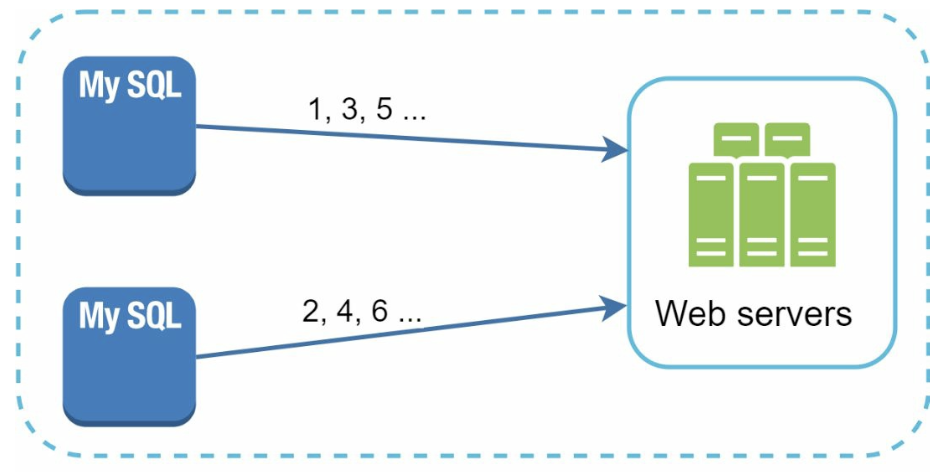
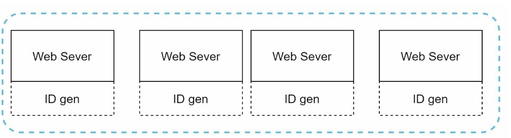
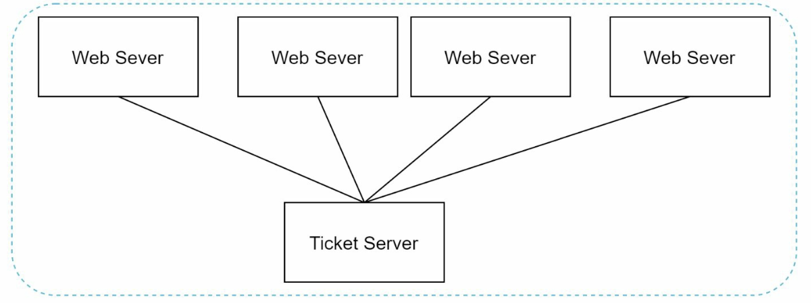
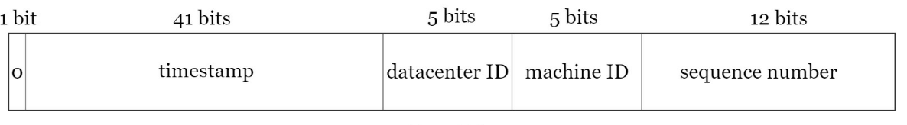
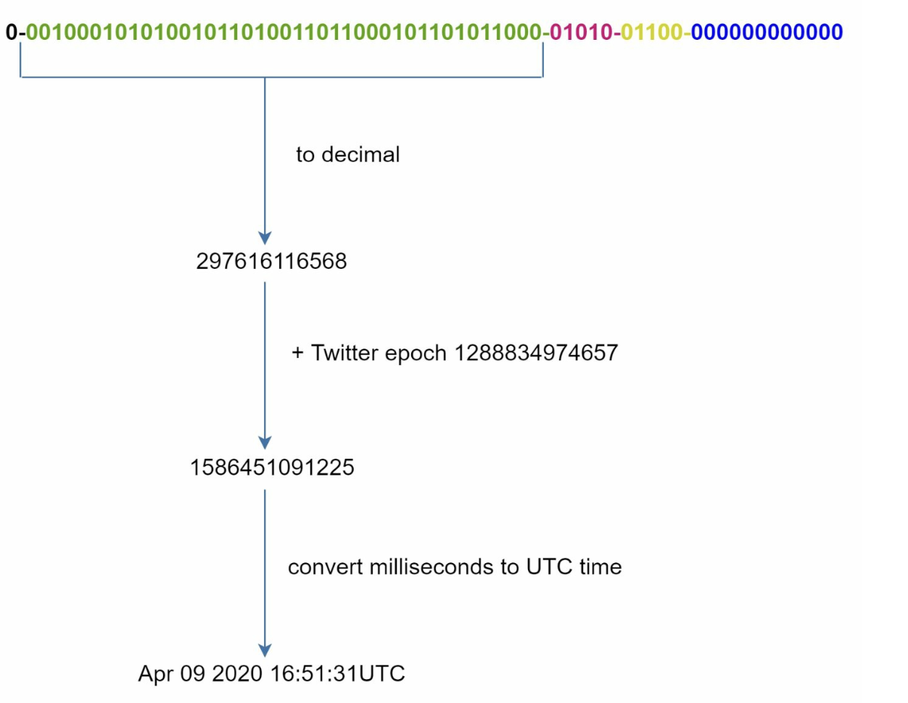

Design a Unique ID Generator in Distributed Systems
64-bit, time-sortable, unique IDs bina central bottleneck ke — multi-master, UUID, ticket server aur Twitter Snowflake ka comparison.
Introduction
Pehla instinct: "RDBMS ka auto_increment primary key use kar lo." Single DB pe chalta hai, lekin distributed environment mein ek DB server kaafi bada nahi, aur multiple DBs ke across minimum delay ke saath unique IDs generate karna challenging hai. Is chapter mein hum aisa ID generator design karte hain jo unique, 64-bit numeric, time-sortable IDs de — tez aur bina central bottleneck ke.
Step 1: Problem samjho aur scope
Clarifying questions se nikli requirements:
- IDs unique hone chahiye.
- IDs sirf numerical values.
- IDs 64-bit mein fit hon.
- IDs date se ordered — shaam ke IDs subah ke IDs se bade. Lekin har baar exactly +1 zaroori nahi.
- Kam se kam 10,000 IDs per second generate karne ki capability.
created_at index nahi chahiye — primary key pe range scan kaafi. B-tree index mein inserts bhi append-like hote hain (random UUID ke comparison mein kam page splits).Step 2: High-level design — 4 options
Option 1: Multi-master replication

auto_increment ko 1 ki jagah k (yahan k = 2, DB servers ki count) se badhata hai. Odd/even split se dono unique rehte hain.DB ka auto_increment use karo lekin step k rakho (k = DB servers ki count). Next ID = same server ka previous ID + k. IDs DB count ke saath scale hote hain.
Drawbacks:
- Multiple data centers ke saath scale karna mushkil.
- IDs multiple servers ke across time ke saath increase nahi karte (server A ka 101 server B ke 98 ke baad bana ho sakta hai).
- Server add/remove karne pe scaling theek se nahi hoti — k badalna = sab IDs ka pattern badalna.
-- MySQL settings (2 servers ke liye)
auto_increment_increment = 2
auto_increment_offset = 1 -- server A: 1,3,5...
auto_increment_offset = 2 -- server B: 2,4,6...Option 2: UUID
UUID ek 128-bit number hai jo computer systems mein information identify karta hai. Collision probability bahut kam hai — Wikipedia ke mutabik roughly 1 billion UUIDs per second 100 saal tak generate karne ke baad hi ek duplicate ki 50% probability aati hai. Example: 09c93e62-50b4-468d-bf8a-c07e1040bfb2.

Pros: simple; servers ke beech coordination nahi → sync issues nahi; scale karna easy — har web server apne IDs ka khud zimmedar, web servers ke saath ID generator bhi scale.
Cons: 128 bits — hamari 64-bit requirement fail; IDs time ke saath upar nahi jaate (UUIDv4 random hai); IDs non-numeric ho sakte hain.
Option 3: Ticket server
Flickr ne distributed primary keys ke liye ticket servers develop kiye. Idea: ek centralized auto_increment feature single DB server (Ticket Server) mein.

Pros: numeric IDs; implement karna easy; small-to-medium scale apps ke liye kaam karta hai.
Cons: Single point of failure. Ticket server down → saare systems jo IDs pe depend hain, down. Multiple ticket servers lagao to naye challenges — data synchronization.
-- Flickr-style ticket table (MySQL)
REPLACE INTO Tickets64 (stub) VALUES ('a');
SELECT LAST_INSERT_ID();Option 4: Twitter Snowflake approach
Twitter ka unique ID generation system "Snowflake" hamari requirements satisfy karta hai. Divide and conquer: ID ko seedha generate karne ki jagah, ID ko sections mein baanto.

| Section | Bits | Kya hai / kyun |
|---|---|---|
| Sign bit | 1 | Hamesha 0. Future use ke liye reserve — signed/unsigned numbers distinguish karne ke kaam aa sakta hai. (Java long signed hai, to positive IDs milte hain.) |
| Timestamp | 41 | Custom epoch se milliseconds. Twitter ka default epoch 1288834974657 = Nov 04, 2010, 01:42:54 UTC. Timestamp sabse upar ke bits mein hai, isliye IDs time se sortable. |
| Datacenter ID | 5 | 25 = 32 datacenters. |
| Machine ID | 5 | Har DC mein 25 = 32 machines. |
| Sequence number | 12 | Same machine pe same millisecond mein generate hue IDs. Har ID pe +1, har millisecond reset to 0. Max 212 = 4096 IDs/ms per machine. |
Datacenter aur machine IDs startup time pe choose hote hain aur generally fixed rehte hain — inhe badalne mein galti se ID conflict ho sakta hai, isliye careful review chahiye. Timestamp aur sequence runtime pe generate hote hain.
Step 3: Deep dive
Timestamp section
Timestamp ke saath ID badhta hai, to IDs time se sortable hain. Binary representation ko UTC mein kaise convert karte hain:

0 sign, green = 41-bit timestamp, pink 01010 = datacenter ID (10), yellow 01100 = machine ID (12), blue = sequence (0). Green part ko decimal mein convert → 297616116568. Usme Twitter epoch 1288834974657 jodo → 1586451091225 ms. Isse UTC time mein convert → Apr 09 2020 16:51:31 UTC. Reverse karke bhi ID se uska creation time nikal sakte ho.41 bits = 241 − 1 = 2,199,023,255,551 ms ≈ ~69 years. Matlab custom epoch ke baad 69 saal tak kaam karega. Epoch jitna recent (aaj ke kareeb), utna overflow door. 69 saal baad naya epoch ya ID migration chahiye.
2^41 ms / (1000 × 3600 × 24 × 365) ≈ 69 yearsSequence number section
12 bits = 4096 combinations. Ye field 0 hi rehta hai jab tak ek hi server pe ek millisecond mein ek se zyada ID generate na ho. Theoretically ek machine 4096 IDs/ms = ~4 million IDs/sec support kar sakti hai — 10,000/sec ki requirement se bahut zyada.
// Snowflake generator (simplified Java)
synchronized long nextId() {
long ts = System.currentTimeMillis();
if (ts < lastTs) throw new IllegalStateException("clock moved backwards");
if (ts == lastTs) {
seq = (seq + 1) & 0xFFF; // 12 bits
if (seq == 0) while ((ts = System.currentTimeMillis()) <= lastTs) {} // wait next ms
} else seq = 0;
lastTs = ts;
return ((ts - EPOCH) << 22) | (dcId << 17) | (machineId << 12) | seq;
}| Option | 64-bit numeric | Time-sorted | No SPOF | Scales |
|---|---|---|---|---|
| Multi-master | ✅ | ❌ (across servers) | ✅ | ⚠️ add/remove server mushkil |
| UUID | ❌ 128-bit | ❌ | ✅ | ✅ |
| Ticket server | ✅ | ✅ | ❌ | ⚠️ central bottleneck |
| Snowflake | ✅ | ✅ (roughly) | ✅ | ✅ |
Step 4: Wrap-up — extra talking points
- Clock synchronization: design assume karta hai ki ID generation servers ka clock same hai. Ek server multiple cores pe ya multiple machines pe ho to ye assumption galat ho sakti hai. Solution: NTP (Network Time Protocol) — clock drift kam karta hai. Clock peeche chala jaaye (NTP correction) to duplicate/out-of-order IDs ka risk — generator ko detect karke wait ya refuse karna chahiye.
- Section length tuning: low concurrency, long-term app ke liye sequence bits kam karo aur timestamp bits badhao.
- High availability: ID generator mission-critical system hai — highly available hona chahiye (multiple instances, har ek ka unique machine ID).
- Requirements confirm: unique, numeric, 64-bit, time-ordered (+1 nahi), 10K/sec.
- Chaaron options ko upar wali table jaisa 1-1 line mein reject karo — reason requirement se jodo.
- Snowflake layout draw karo: 1 | 41 | 5 | 5 | 12, aur har field ka math (69 years, 32×32 machines, 4096/ms).
- Deep dive: clock skew/backwards, machine ID allocation, sequence overflow (next ms ka wait).
Common follow-up questions
Snowflake IDs strictly ordered hain?
Nahi — "roughly" (k-sorted). Alag machines ke same millisecond ke IDs ka order machine ID pe depend karta hai, aur clocks thode skewed hote hain. Per-machine monotonic hain.
Clock peeche chala gaya to?
Generator lastTs yaad rakhta hai; chhota drift ho to wait karo, bada ho to error throw karo aur alert. Kabhi bhi purane timestamp se ID mat do.
32 se zyada DCs ya machines chahiye?
Bits re-balance karo: datacenter + machine ko 10-bit worker ID bana do (1024 workers), ya sequence bits kam karo.
Ye IDs public URLs mein expose karna safe hai?
Inse creation time aur approximate volume leak hota hai. Sensitive ho to external ke liye alag opaque ID ya encoding use karo.
Key Takeaways
- Distributed systems mein single-DB
auto_incrementscale nahi karta. - Multi-master (time-order nahi), UUID (128-bit, unsorted), Ticket server (SPOF) — sab mein kami.
- Snowflake: 1 sign + 41 timestamp + 5 DC + 5 machine + 12 sequence = 64 bits.
- 41 bits ≈ 69 years from custom epoch; 4096 IDs/ms per machine.
- Clock sync (NTP), section tuning aur high availability wrap-up ke key points.